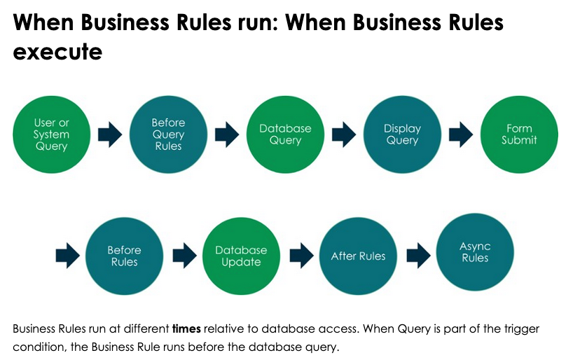
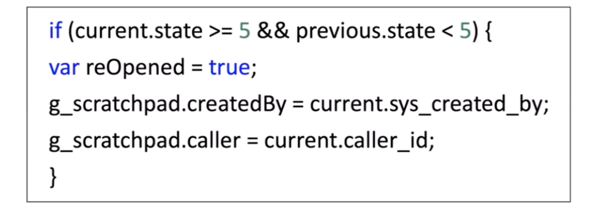
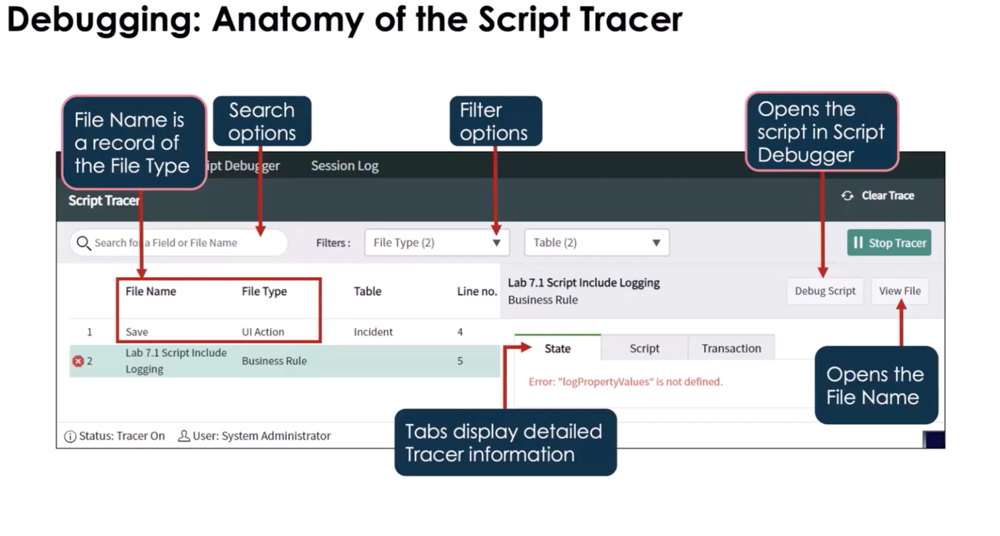
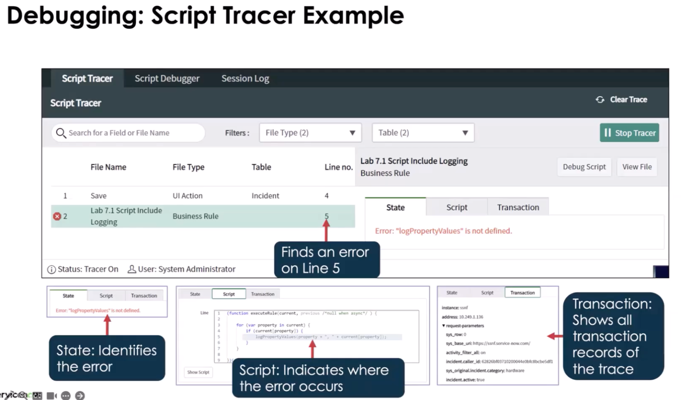
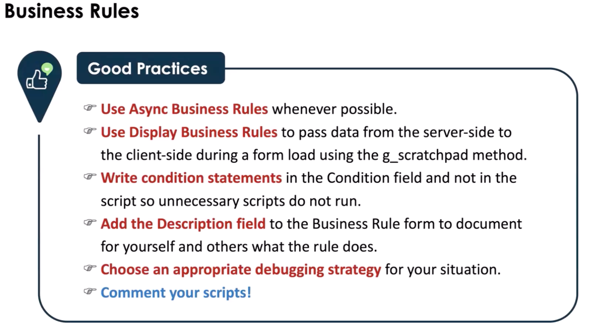

Business Rule
A record that contains javascript that does something in relation to a table When a table is queried. When a record is:
- displayed
- updated
- deleted
- inserted
Why use: When you don't/can't use the UI.
When use: when enforcing data behavior at the database level (table)
How often use: quite often!!
Purpose:
- Enforce data rules at save time
Runs:
- Server
- Before | After | Async

Note: the green in the image is action being performed relative to a table. The blue color is what will happen in the business rule
Business Rules Trigger Actions and do not have to include scripting. You can have a condition for when the script runs and then have a function for what you can actually do. In scripting you have access to Glide System,
Variables
- current
- previous
- g_scratchpad ( take data from server-side and pass to client side)
- Only works with Display Business Rules

- global variables
- allows for dot.walking aka dot notation. Allows you to go from table to table or field to field
- allows for the dot-walking Path tree > Note: Dot-walking only works through reference fields, not plain strings. > Example:
Use When:
- Data integrity is critical
- Logic must run regardless of UI/API/import
Touches:
- Tables: current table
- Fields: current.
- APIs: GlideRecord
Common Mistakes:
- Doing UI logic
- Wrong timing (Before vs After)
- Infinite loops
1-Min Example:
- If state changes to Closed → set closed_at
Types of Business Rules
Before Query : Execute before a query is sent to the database
- Example: Prevent users from one locations seeing CIs from another
After Rules : Execute after form submission and record update in the database
- Example: Cascade changes made to the approval field of a service Catalog request to the requested items attached to that request
Async Rules : Execute after records are inserts/modified/queried. Use this when the update is not time-sensitive to the users. It gets added as a Schedule Job and runs asynchronously.
- Example: Notify subscribers when CI's are affected by an incident
Server-Side Debugging
There are several tools to use
- GlideSystem logging methods
- gs.info()
- gis.error()
- gs.warn()
- gs.debug()
- gs.log() --> gs.info()
- gs.addInfoMessage() and several others
- Debug Business Rules module
- Script Debugger
- Script tracer
-
Allows you to filter the debugging search to narrow down and problems in the script


-
Console Debugger
- Try/Catch (JavaScript)
Debug Mode: Enable debug mode and use break points and you have access to the call stack. Cannot use on an async script.
Note: At least one breakpoint is required Must be and admin or script_debugger to use this
thisis not supported you can use the console with the call stack and see current data when stepping through the script
Good Practices
